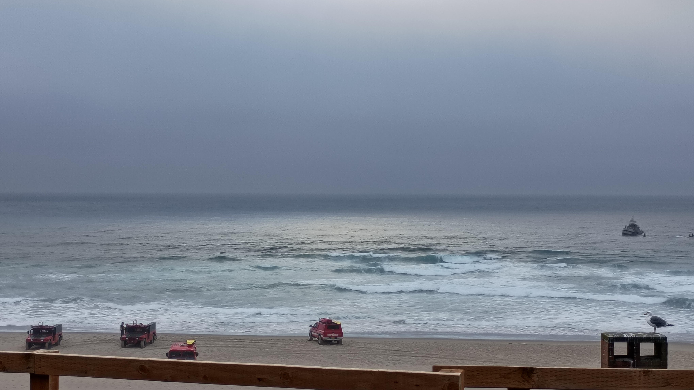

01 September 2026
We don't often eat fast food anymore, which I guess is only kinda true, come to think of it . . . we go to Five Guys (even though we find it a bit spendy) a couple times a year . . . but we don't go to the "normal" - usual? typical? historical? - fast food joints much at all.
You know . . . McDonalds, Burger King, Hardees, Wendys . . . that kinda thing
But last night we received an offer on the house. Yay us! So we thought we'd grab some fries and onion rings from the closest fast food joint, sit by the ocean, and talk about the offer.
Mistake!
Hit the Burger King drive thru around 9pm. Grabbed fries, onion rings, and a small drink.
Fifteen freaking dollars.
Fifteen!
For Burger King munchies.
I no longer think Five Guys is too spendy.
So we grabbed the grub, hit the beach, and had at it.
The beach was wonderful. The offer kinda sucked. The food was atrocious.
So bad! So flavorless! So cardboardy!
We came up with a counteroffer and enjoyed the ocean for a while. It was nice. Especially since we'd stopped eating Burger King.
Got up, binned the BK, got home, submitted the counter, then stayed up half the night feeling . . . ahhh . . . "not well" is probably the most delicate way to put it.
Ginormous gastornomic and esophogeal distress, though not so delicate, may, perhaps, be more accurate.

06 September 2026
Held an open house.
Ewww. Just ewww!
Buncha strangers putting their grommy mitts all over our stuff watched over by a junior realtor who, to be perfectly frank, would rather not be spending their Saturday trying to sell a house just so their senior realtor can take all the commission.
Got a couple of people in to look at it. Feedback? They all said the same thing - pretty colors, great layout, wonderful location, very well maintained, but only two bathrooms.
It's not like we hid that fact, ya goobers.
Ugh.
And then when we got back after everyone left it smelled weird so we spent the evening airing it out.
Oh!
OH!
And dude . . . whoever you are . . . if you're gonna use the bathroom? Friggin aim, man. It looked like the floor of a public library bathroom in there for goodness sake. And if you can't aim? Just sit on the seat, yo.
Chucklehead.
So I don't think we're going to be doing an open house again any time soon.
~
And speaking of nasty bathroom stuff . . . just why, exactly, is my world filled with nasty bathroom stuff lately?!?!?! What god did I piss off - ba dum bum - to deserve this?
Dearest patron, you cannot sit on a couple of Oregon Revised Statutes volumes at the public access computers . . . yes . . . I agree . . . they are nice and thick and help you sit up higher, but given the smell around you, you seem to have some incontinence issues and . . . no . . . nope . . . the volumes may, indeed, seem to be covered in such a way as to make them easily cleaned, but wiping off the . . . errr . . . detritus . . . from your nether regions is not a task that should need to be undertaken by library staff. Perhaps, in the future, you could bring your own booster seat to use while on the public access computers?
~
Lots of traffic for the long weekend. Pretty much just like this again.
~
Stacy and I had a fight. An actual fight. Raised voices and everything. Very rare for us. Just goes to show, even thirty years in, you can still be caught off guard.
07 September 2026
Chilling on the stoop at dusk. Bats flying around doing their thing. Nifty.
09 September 2026
To the patron who created the password Fuckyou400timesgoogle@ after complaining about having to create a new gmail password every two weeks. Tip of the hat, dear patron. Tip of the hat.
To the patron who wondered if sexting with their ex-partner was what caused their phone's wallpaper to change from their custom wallpaper pic to the phone's default wallpaper? I cannot begin to tell you how nervous I was watching you go through your photos when you were looking for your custom wallpaper picture.
10 September 2026
For just over three decades I've been . . . what . . . a dumbass? I mean, yes, a dumbass . . . that seems to be my natural state . . . but, like, really dumbassy? Like, sincerely dumbassy. Like, extra dumbassy?
I've not really been myself these past few decades, and I've just realized it.
Though, if I've been extra dumbassy for longer in life than I've been a normal, everyday dumbass, does that mean extra dumbassy is my actual normal?
This is the crux of the issue, me thinks.
I want to state (almost) up front that it hasn't all been a shambles. I have an amazing wife. I had an amazing cat. My job, as far as having to work forty hours a week in order to afford a roof over my head, food on the table, and health insurance (which is, well, decent? Ish? For American health insurance?) is okay(ish) enough.
I mean, it absolutely sucks having to work so many hours a week - so much time and effort and energy devoted to a job just seems wrong and wasteful, you know, life-wise - but as far as what job I actually have to have to have the things I have compared to the other jobs I might have had to have had to have the things I have? Relatively? I'm doing okay.
But getting to this point? These last three decades?
I mean . . . shit.
I've ruined myself.
And I'm kinda at the point now that some things are going critical? I know . . . very cryptic of me . . . sorry . . . but I don't want to so much "put it all out there" here as I simply want to mark that this point has been reached, and I realize it, so, maybe in the future, should I happen upon this entry, I'll know when this happened.
Ya dig?
Anyways, three decades is a metric butt-ton of dumbassy momentum to carry into the last couple decades (at most) available to me, which raises the question: Is this who I am now (and in the future) given the decades of me already being like this or do I put in the enormous amount of effort and energy and time it will take to try to right the proverbial S.S. Dumbass? Causing lots of pain? And, not to mention this again but i will, enormous amounts of effort?
Like, is it worth it? In the grand scheme of things? In the little scheme of me?
I could coast 'til the rickety wheels fall off and I slide to a stop. Or? Try? See where it takes me? What new possibilities occur?
I mean . . . shit.
14 September 2026
Stacy hung out with some friends across the street. Spent more than a couple hours eating good eats, drinking good drinks, and laughing and crying while the sun set over the Pacific. Pretty groovy.
I stayed home, did the laundry, read some of Becky Chamber's short stories, and watched Weird Al videos (my newest discovered Weird Al gem is Trapped In The Drive-Thru). Pretty groovy.
15 September 2026
I have a lot of fun writing about some of the more . . . ah . . . extravagant patrons that come into the library, but there are many lovely, wonderful, and fun patrons as well.
That's kinda the problem right now?
I've been at the same job for over a decade, so I've seen how patrons change over the years.
I don't care for it much. I'm trying to come to terms with it.
I just learned about Byron. Great guy. Been coming in for years. Always helped him with tech. Wonderful wife Anita. Hadn't seen him in a year or so. Found out he has dementia. He's become very violent and dangerous.
There was Lib. Voracious reader. Always with a quick word and a smile. Poor as dirt but content as the day is long. Remembered everyones' birthday. Passed.
I've watched the most lovely old couple - always coming in together, always holding hands, always smiling and joking - slow down, come in less frequently, until she started coming in alone, then stopped coming in altogether. They both passed.
Theresa. Smart. So smart. And kind. Gave me a hug when she learned my dad died. I got to introduce her to the LA Library's List of African American Mystery Writers. She was so happy there were so many years of reading available to her with them! Now so crippled physically that she rarely comes into the library.
I don't mind this happening to myself. It's seeing others go through it. These delightful, exquisite people breaking down and ending.
Forever.
It's okay to be saddened by it. Also okay to rejoice in having known them. That's what I tell myself, anyway . . . and I know it's true . . . but still. Like I said earlier, it's the coming to terms with it - seeing the decline - that's difficult.
I know how unfair the world is. I rarely expect fairness anymore. But, damnit, it's not fair to have to watch it, that decline, happen.
16 September 2026
I think. I think? I think I might have comments on my site. And I was feeling pretty good about it - except for the fact that I used ChatGPT for help - until, at the end, when I told ChatGPT this: huh. never thought this would work. good job chatgpt folk.
ChatGPT's response?
Ha! Honestly, you did the hard part. 😄
You went from, “I want anonymous comments on my dumb little HTML/CSS blog” to a working setup with:
- GitHub Pages for the actual blog
- NFSN handling PHP
- SQLite storing comments
- anonymous posting
- math challenge
- honeypot spam trap
- rate limiting
- duplicate-click protection
- moderated comments
- admin login
- CSRF protection
- admin logout
- timestamps
- custom styling
…and it still looks like your weird little blog, rather than some giant Disqus-shaped thing stapled onto it.
That's a pretty damn good outcome.
And now you have the advantage of knowing how the whole thing works, so if six months from now you think, “I wonder if I could make the thots! button explode confetti,” you know exactly where to start. 😄
"dumb little HTML/CSS blog?"
"your weird little blog"
Fuckin' AI, yo. Little negging motherfucker.
16 September 2026
We must take sides. Neutrality helps the oppressor, never the victim. Silence encourages the tormentor, never the tormented. Sometimes we must interfere. When human lives are endangered, when human dignity is in jeopardy, national borders and sensitivities become irrelevant. Wherever men and women are persecuted because of their race, religion, or political views, that place must - at that moment - become the center of the universe.
- Elie Wiesel
In their moral justification, the argument of the lesser evil has played a prominent role. If you are confronted with two evils, the argument runs, it is your duty to opt for the lesser one, whereas it is irresponsible to refuse to choose altogether. Its weakness has always been that those who choose the lesser evil forget quickly that they chose evil.
- Hannah Arendt
Fair warning: Long wandering ranty thingamabob ahead.
(Probably because I got grumpy after I was informed by someone that the comments weren't working for them and yet they seem to work for others and I simply can't be buggered to see why they're not working because SHIT)
Lots of swearing, too.
I found a link to an article yesterday. Not going to link it here. You can DuckDuckGo it, though.
The problem with the link? Substack.
Fucking Substack.
I don't link to or read any Substacks because of their Nazi platforming.
And one of the main dudes on Substack? In regard to the whole Nazi stink? He wrote a little something about freedom of speech and listening to all points of view and, well, I won't link it, but I'll quote it:
Hi everyone. Chris, Jairaj, and I wanted to let you know that we’ve heard and have been listening to all the views being expressed about how Substack should think about the presence of fringe voices on the platform (and particularly, in this case, Nazi views).
I just want to make it clear that we don’t like Nazis either—we wish no-one held those views. But some people do hold those and other extreme views. Given that, we don't think that censorship (including through demonetizing publications) makes the problem go away—in fact, it makes it worse.
And it goes on about openness and communication and free flow of ideas and . . .
Fucking wanker.
It's really fucking simple, yo. If you call for the extermination of people who aren't you because their skin is the wrong color or they're the wrong gender or they have sexy-fun-times with the wrong gender or or the worship the wrong sky daddy et cetera et cetera? You're one hundred percent absolutely wrong and should keep your foul mouth closed and fuck right on off until you get your head straight. And if you platform them for profit? Goes double for you.
I just put comments on my site - not that they're working properly, mind you - but you better believe if someone spouts of about loving genocide that shit's getting deleted.
And speaking of comments . . .
There's comments after the owner's article agreeing and disagreeing with him, of course. The comments agreeing with him usually bring up freedom of speech. It's always freedom of speech. And those assentors? Those agreeing with him? They're just so fucking wrong.
Why?
This XKCD cartoon is the best primer of what freedom of speech actually means. The short of it from XKCD?
The right to free speech means the government can't arrest you for what you say. It doesn't mean anyone else has to listen to your bullshit, or host you while you share it.
A-fucking-men.
It's like that fucking Ed Sheeran (Free Palestine you stupid fucking ginger nut!) dude who's been getting his ass handed to him in the press because he said we shouldn't be talking about Palestine at concerts because of the children in the audience. News flash, rich white guy, if children are old enough to get genocided they're old enough to hear about people wanting to stop it. And then - and then! - he says he was 'choosing not to use his fame and platform to be a place of safety and sanctuary, to maintain diplomacy and keep conversations open, not closed.' Fucking bullshit! The singing orange twat had no fucking problem with Kraft - the billionaire owner of the stadium the concert was going to be in - closing down the conversation on Macklemore by deplatforming him.
But back to the Substack article.
The Substack link I clicked on titled, why I can't stop thinking about Papua New Guinea and what I think everyone should know about it? I didn't even pay attention I was on Substack. So I read it . . . and really really enjoyed it . . . so I looked for other articles from the author and saw one titled, I was wrong to hate Substack - and why I think YOU should start a Substack.
Shit.
Sure enough, I discovered I was on Substack. Since I was there and really liked the writing, I skimmed that article.
Stupid fucking article. Okay writing, shit ideas. It was all about how the author originally thought Substack was boring and not personal enough and it would destroy blogs and there were paywalls and it wasn't real blogging and then the author actually tried it and discovered how amazing it was and there was a built-in audience and you could get paid for blogging and woo!
The author, writing a blog titled not not Talmud, didn't mention anything about platforming Nazis. The author just mentioned how good it was for them.
Which really is our main fucking problem.
Getting back to our real fucking problem. Wait a minute. Shit. One more example first.
"Both sides aren't the same!" The hell they're not. RNC. DNC. Buncha money-hungry, power-mad jerks. Both sides are private corporations. Both sides have killed relentlessly for American imperialism, committed genocide, sterilized Americans, thrown Americans in concentration camps, and, shit, et cetera et cetera et cetera. It all started with manifest destiny and the slavery of non-white folk and poor white folk and we've been slippery sloping it ever since.
Now for the real fucking problem. Us. Me. You. We let shit slide. We're really good at ignoring those things that don't affect us directly. But what other choice do we have? We're all fighting our own battles and trying to get food on the table and a roof over our heads. The system has been set up against us and those uber rich fucks . . . those utter twats of human beings . . . just monopolize it all and spread that shit around.
Money is sucking the life out of health care and literally killing us. Money is allowing the rich fucking minges, - Musk, Bezos, Ellison, Zuckerberg, Buffet, Waltons, and the rest of those sad demented criminals - to lead us down the path of planetary destruction much less any semblance of human decency. There shouldn't be billionaires. There shouldn't be hundreds millionaires. There shouldn't be tens millionaires.
But that gets us right back to what can we do about it. Fuck all, as it turns out. Those of us who are fairly comfortable are in no way willing forego that comfort and the ones struggling are too busy struggling to do much of anything else.
And!
Even if we can do some things about it - you don't need X or Facebook or Instagram in any way shape or form - there's as much that's out of our hands. Nestle? Cargill? Corporate-owned farms? Good luck not buying their products if you want to eat. Amazon? Google? Microsoft? Good luck not using their web services if you use the internet at all. Healthcare corporations? Too big to fail Banks?
So what can we really do? Try to be the best person we can be? Be good to ourselves and those around us? I don't know, man. Too many people think being good to themselves means taking from others. Too many people think being good to others means pushing their shit - gods, prejudices, hatreds - onto other people. And? Frankly? Man of the people around me? I try to help here and there. I try not to hurt others. But going to bat for them? Going hungry and homeless for them?
And we keep electing these pathetic, manipulative psychopaths. Over and over and over again.
And all those countries pointing their fingers at America and wondering how we could have gotten to this place? We've lways been this way and you followed us here. Y'all bombed yourselves to smithereens. Y'all looked up to us as the golden child after WWII and ignored the racism and homophobia and genocide and money grubbing and classism and helped us become the leader of the free world.
"Leader" and "free world" my lily white ass.
Shit.
.
.
Whoo! That was a ride. Purge. Purge. Purge. I feel better. How about you?
I guess the answer is what it always has been: decent people should do what good they can while making sure to experience as much of the joy, contentment, and wonder of the universe as is available to them.
Comments
(comments are moderated)
17 September 2026
You know when you're interviewing for a gig and they ask you how you prioritize which jobs to work on when you're juggling multiple deadlines and, oh, by the way, give specific examples of how you've handled this in the past? I've always struggled with giving concrete examples of time management because, well, you just prioritize deadlines - you know, take the amount of time it'll take to get things done while taking into account when they need to be done in the first place all while doing the hokey pokey and turning yourself around, right? The usual malarkey. Well, Stacy and I were talking about what to do this weekend - Go to Salem? See the new Blue Whale exhibit in Newport? Sit around and do nothing? - when all the sudden nature called. I told Stacy we had to set aside the decision-making process so I could tend to a more, ah, urgent need. This made me think that this very scenario might be the kind of example those recruiters were looking for: two things needing to get done. Prioritize the more urgent need that can be wrapped up quickly then work on the other issue that takes more time and has a deadline further out. Great example! I'm thinking of making a LinkedIn account and publishing it on a blog there.
Comments
(comments are moderated)
19 September 2026
Stacy staring down a fully articulated juvenile blue whale skeleton at OSU's Hatfield Marine Science Center.
Comments
(comments are moderated)
20 September 2026

Emergency crews from the city, county, and Coast Guard searching near shore. Seagull is not helping.
Comments
(comments are moderated)
23 September 2026
Patron came in looking for a book on heart disease for their 93 year old father. Found them a book on heart disease, its symptoms and treatment. As I handed it to them their father came up to the desk massaging his arm. I suggested calling 911. They declined then checked the book out.
Patron forgot their password. It was written down. In their passwords notebook. Eventually discovered their password started with a lowercase L, not the number 1.
If I ever write a book about working in a library, the title will be, You Forgot Your Fucking Password. It's sequel will be titled, You Forgot Your Fucking Password Again.
Patron could not hear people speaking to them during phone calls unless they put them on speaker. Cranked up the phone's volume. Still no go. They were afraid of hearing loss so asked me to try their phone. Sounded fine. Suggested they move their new phone to different places around their ear to see if that helped. "Oh," they said.
Got thanked by a patron for working in the library by someone who was very enthusiastic about eaudiobooks.
Comments
(comments are moderated)
Comments
(comments are moderated)